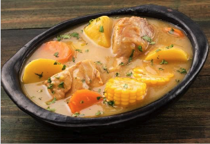

Se dice que el sancocho proviene de España y deriva de una sopa conocida como “olla podrida”, famosa por su olor fuerte. Aunque el nombre sugiere algo desagradable, la mezcla de técnicas indígenas, españolas y africanas creó este exquisito manjar. El sancocho es un plato insignia del país. Cada región tiene su versión especial, adaptada a sus costumbres y recursos locales. La base suele ser proteína animal (carne, pollo, pescado), legumbres y verduras. A menudo se añaden maíz, plátanos verdes y maduros, papa y yuca. En Antioquia, el sancocho trifásico incluye carne de res, cerdo y pollo o gallina, acompañado de arroz, ensalada y aguacate. Por su parte en Nariño y Valle del Cauca, puede llevar gallina, carne salada o cola de res. En el Caribe, la proteína principal es el pescado (sábalo o bocachico), pero también se usa gallina y carne salada. Este plato, ideal para almorzar, se cocina en leña en ocasiones especiales. En algunas familias, es tradicional prepararlo el 25 de diciembre y el 1 de enero, y es el plato principal para los “paseos de olla”.
